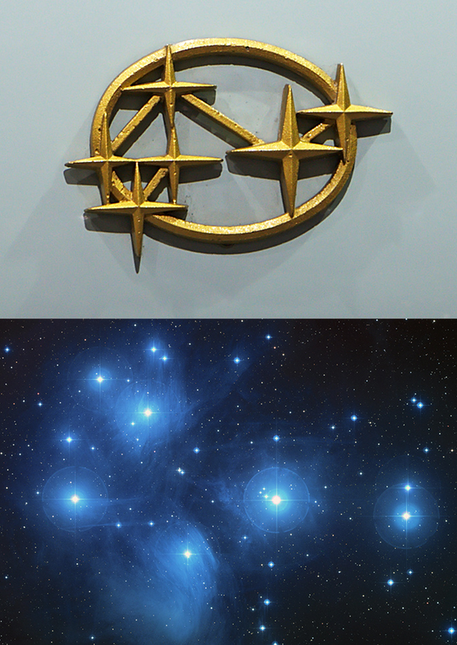

- Subaru, the automobile manufacturing company.
- Gamma-ray Bursts
X - Vela Satellite/Mission - Blank = “Supernova” (Sonata)
X = Type Ia Supernova - X: Brian May, lead guitarist of the band Queen, as well as an astrophysicist.
Y: 486958 Arrokoth or Ultima Thule.
The stereo image is the 2015 release of the New Horizons Pluto mission, showing Pluto. Brian May, more famously known for his work with the band Queen, is also an astrophysicist and a science team collaborator with the New Horizons mission. He released the single, New Horizons, in paying tribute to the most distant exploration of a Solar System object by a spacecraft, flyby targeted at Ultima Thule in the Kuiper Belt.
More trivia: May is also a co-founder of the awareness campaign Asteroid Day and the ‘Asteroid 52665 Brianmay’ is named after him. - The Jazero Crater, Mars
- Hubble Deep Field
- M N = SAOImage DS9
Blank = Star Trek
- X = Aryabhatta, India’s First Satellite designed by ISRO
Launch Site - Soviet Union’s Kapustin Yar launch site, using Kosmos-3M
(Funda - First Indian satellite was not, in fact, launched from India) - The Curiosity Rover
August 5, 2013, Curiosity rover’s landing anniversary on Mars. Curiosity sang ‘Happy Birthday’ to itself for the first and the last time ever with the help of SAM, Curiosity's Sample Analysis at Mars instrument, by vibrating at different frequencies. - Discovery of Cosmic Microwave Background Radiation
James Peebles - "321", resembling the countdown before liftoff.
Subaru is the Japanese name for the Pleiades star cluster M45, or the "Seven Sisters" (one of whom tradition says is invisible – hence only six stars in the Subaru logo), which in turn inspires the logo and alludes to the companies that merged to create Fuji Heavy Industries.

.
.